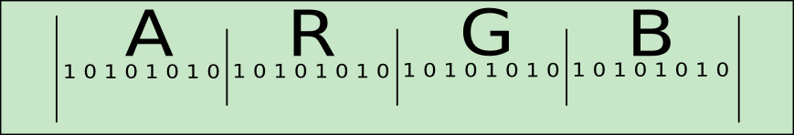

QPixelFormat Class
QPixelFormat is a class for describing different pixel layouts in graphics buffers. More...
| Header: | #include <QPixelFormat> |
| CMake: | find_package(Qt6 REQUIRED COMPONENTS Gui) target_link_libraries(mytarget PRIVATE Qt6::Gui) |
| qmake: | QT += gui |
Public Types
| enum | AlphaPosition { AtBeginning, AtEnd } |
| enum | AlphaPremultiplied { NotPremultiplied, Premultiplied } |
| enum | AlphaUsage { IgnoresAlpha, UsesAlpha } |
| enum | ByteOrder { LittleEndian, BigEndian, CurrentSystemEndian } |
| enum | ColorModel { RGB, BGR, Indexed, Grayscale, CMYK, …, Alpha } |
| enum | TypeInterpretation { UnsignedInteger, UnsignedShort, UnsignedByte, FloatingPoint } |
| enum | YUVLayout { YUV444, YUV422, YUV411, YUV420P, YUV420SP, …, Y16 } |
Public Functions
| QPixelFormat() | |
| QPixelFormat(QPixelFormat::ColorModel colorModel, uchar firstSize, uchar secondSize, uchar thirdSize, uchar fourthSize, uchar fifthSize, uchar alphaSize, QPixelFormat::AlphaUsage alphaUsage, QPixelFormat::AlphaPosition alphaPosition, QPixelFormat::AlphaPremultiplied premultiplied, QPixelFormat::TypeInterpretation typeInterpretation, QPixelFormat::ByteOrder byteOrder = CurrentSystemEndian, uchar subEnum = 0) | |
| QPixelFormat::AlphaPosition | alphaPosition() const |
| uchar | alphaSize() const |
| QPixelFormat::AlphaUsage | alphaUsage() const |
| uchar | bitsPerPixel() const |
| uchar | blackSize() const |
| uchar | blueSize() const |
| uchar | brightnessSize() const |
| QPixelFormat::ByteOrder | byteOrder() const |
| uchar | channelCount() const |
| QPixelFormat::ColorModel | colorModel() const |
| uchar | cyanSize() const |
| uchar | greenSize() const |
| uchar | hueSize() const |
| uchar | lightnessSize() const |
| uchar | magentaSize() const |
| QPixelFormat::AlphaPremultiplied | premultiplied() const |
| uchar | redSize() const |
| uchar | saturationSize() const |
| QPixelFormat::TypeInterpretation | typeInterpretation() const |
| uchar | yellowSize() const |
| QPixelFormat::YUVLayout | yuvLayout() const |
Related Non-Members
| QPixelFormat | qPixelFormatAlpha(uchar channelSize, QPixelFormat::TypeInterpretation typeInterpretation = QPixelFormat::UnsignedInteger) |
| QPixelFormat | qPixelFormatCmyk(uchar channelSize, uchar alphaSize = 0, QPixelFormat::AlphaUsage alphaUsage = QPixelFormat::IgnoresAlpha, QPixelFormat::AlphaPosition alphaPosition = QPixelFormat::AtBeginning, QPixelFormat::TypeInterpretation typeInterpretation = QPixelFormat::UnsignedInteger) |
| QPixelFormat | qPixelFormatGrayscale(uchar channelSize, QPixelFormat::TypeInterpretation typeInterpretation = QPixelFormat::UnsignedInteger) |
| QPixelFormat | qPixelFormatHsl(uchar channelSize, uchar alphaSize = 0, QPixelFormat::AlphaUsage alphaUsage = QPixelFormat::IgnoresAlpha, QPixelFormat::AlphaPosition alphaPosition = QPixelFormat::AtBeginning, QPixelFormat::TypeInterpretation typeInterpretation = QPixelFormat::FloatingPoint) |
| QPixelFormat | qPixelFormatHsv(uchar channelSize, uchar alphaSize = 0, QPixelFormat::AlphaUsage alphaUsage = QPixelFormat::IgnoresAlpha, QPixelFormat::AlphaPosition alphaPosition = QPixelFormat::AtBeginning, QPixelFormat::TypeInterpretation typeInterpretation = QPixelFormat::FloatingPoint) |
| QPixelFormat | qPixelFormatRgba(uchar redSize, uchar greenSize, uchar blueSize, uchar alphaSize, QPixelFormat::AlphaUsage alphaUsage, QPixelFormat::AlphaPosition alphaPosition, QPixelFormat::AlphaPremultiplied premultiplied = QPixelFormat::NotPremultiplied, QPixelFormat::TypeInterpretation typeInterpretation = QPixelFormat::UnsignedInteger) |
| QPixelFormat | qPixelFormatYuv(QPixelFormat::YUVLayout yuvLayout, uchar alphaSize = 0, QPixelFormat::AlphaUsage alphaUsage = QPixelFormat::IgnoresAlpha, QPixelFormat::AlphaPosition alphaPosition = QPixelFormat::AtBeginning, QPixelFormat::AlphaPremultiplied premultiplied = QPixelFormat::NotPremultiplied, QPixelFormat::TypeInterpretation typeInterpretation = QPixelFormat::UnsignedByte, QPixelFormat::ByteOrder byteOrder = QPixelFormat::LittleEndian) |
Detailed Description
In Qt there is a often a need to represent the layout of the pixels in a graphics buffer. Internally QPixelFormat stores everything in a 64 bit datastructure. This gives performance but also some limitations.
QPixelFormat can describe 5 color channels and 1 alpha channel, each can use 6 bits to describe the size of the color channel.
The position of the alpha channel is described with a separate enum. This is to make it possible to describe QImage formats like ARGB32, and also describe typical OpenGL formats like RBGA8888.
How pixels are suppose to be read is determined by the TypeInterpretation enum. It describes if color values are suppose to be read byte per byte, or if a pixel is suppose to be read as a complete int and then masked.
There is no support for describing YUV's macro pixels. Instead a list of YUV formats has been made. When a QPixelFormat is describing a YUV format, the bitsPerPixel value has been deduced by the YUV Layout enum. Also, the color channels should all be set to zero except the fifth color channel that should store the bitsPerPixel value.
See also TypeInterpretation.
Member Type Documentation
enum QPixelFormat::AlphaPosition
This enum type is used to describe the alpha channels position relative to the color channels.
| Constant | Value | Description |
|---|---|---|
QPixelFormat::AtBeginning | 0 | The alpha channel will be put in front of the color channels . E.g. ARGB. |
QPixelFormat::AtEnd | 1 | The alpha channel will be put in the back of the color channels. E.g. RGBA. |
enum QPixelFormat::AlphaPremultiplied
This enum type describes the boolean state if the alpha channel is multiplied into the color channels or not.
| Constant | Value | Description |
|---|---|---|
QPixelFormat::NotPremultiplied | 0 | The alpha channel is not multiplied into the color channels. |
QPixelFormat::Premultiplied | 1 | The alpha channel is multiplied into the color channels. |
enum QPixelFormat::AlphaUsage
This enum describes if the alpha channel is used or not. Sometimes the pixelformat will have a size for the alpha channel, but the pixel format does actually not use the alpha channel. For example RGB32 is such a format. The RGB channels are 8 bits each, and there is no alpha channel. But the complete size for each pixel is 32. Therefore the alpha channel size is 8, but the alpha channel is ignored. Its important to note that in such situations the position of the alpha channel is significant.
| Constant | Value | Description |
|---|---|---|
QPixelFormat::IgnoresAlpha | 1 | The alpha channel is not used. |
QPixelFormat::UsesAlpha | 0 | The alpha channel is used. |
enum QPixelFormat::ByteOrder
This enum describes the ByteOrder of the pixel format. This enum is mostly ignored but have some use cases for YUV formats. BGR formats have their own color model, and should not be described by using the opposite endianness on an RGB format.
| Constant | Value | Description |
|---|---|---|
QPixelFormat::LittleEndian | 0 | The byte order is little endian. |
QPixelFormat::BigEndian | 1 | The byte order is big endian. |
QPixelFormat::CurrentSystemEndian | 2 | This enum will not be stored, but is converted in the constructor to the endian enum that matches the enum of the current system. |
enum QPixelFormat::ColorModel
This enum type is used to describe the color model of the pixelformat. Alpha was added in 5.5.
| Constant | Value | Description |
|---|---|---|
QPixelFormat::RGB | 0 | The color model is RGB. |
QPixelFormat::BGR | 1 | This is logically the opposite endian version of RGB. However, for ease of use it has its own model. |
QPixelFormat::Indexed | 2 | The color model uses a color palette. |
QPixelFormat::Grayscale | 3 | The color model is Grayscale. |
QPixelFormat::CMYK | 4 | The color model is CMYK. |
QPixelFormat::HSL | 5 | The color model is HSL. |
QPixelFormat::HSV | 6 | The color model is HSV. |
QPixelFormat::YUV | 7 | The color model is YUV. |
QPixelFormat::Alpha | 8 | There is no color model, only alpha is used. |
enum QPixelFormat::TypeInterpretation
This enum describes how each pixel is interpreted. If a pixel is read as a full 32 bit unsigned integer and then each channel is masked out, or if each byte is read as unsigned char values. Typically QImage formats interpret one pixel as an unsigned integer and then the color channels are masked out. OpenGL on the other hand typically interpreted pixels "one byte after the other", Ie. unsigned byte.
QImage also have the format Format_RGBA8888 (and its derivatives), where the pixels are interpreted as unsigned bytes. OpenGL has extensions that makes it possible to upload pixel buffers in an unsigned integer format.

The image above shows a ARGB pixel in memory read as an unsigned integer. However, if this pixel was read byte for byte on a little endian system the first byte would be the byte containing the B-channel. The next byte would be the G-channel, then the R-channel and finally the A-channel. This shows that on little endian systems, how each pixel is interpreted is significant for integer formats. This is not the case on big endian systems.
| Constant | Value |
|---|---|
QPixelFormat::UnsignedInteger | 0 |
QPixelFormat::UnsignedShort | 1 |
QPixelFormat::UnsignedByte | 2 |
QPixelFormat::FloatingPoint | 3 |
enum QPixelFormat::YUVLayout
YUV is not represented by describing the size of the color channels. This is because YUV often use macro pixels, making the concept of separate color channels invalid. Instead the different YUV layouts are described with this enum.
| Constant | Value |
|---|---|
QPixelFormat::YUV444 | 0 |
QPixelFormat::YUV422 | 1 |
QPixelFormat::YUV411 | 2 |
QPixelFormat::YUV420P | 3 |
QPixelFormat::YUV420SP | 4 |
QPixelFormat::YV12 | 5 |
QPixelFormat::UYVY | 6 |
QPixelFormat::YUYV | 7 |
QPixelFormat::NV12 | 8 |
QPixelFormat::NV21 | 9 |
QPixelFormat::IMC1 | 10 |
QPixelFormat::IMC2 | 11 |
QPixelFormat::IMC3 | 12 |
QPixelFormat::IMC4 | 13 |
QPixelFormat::Y8 | 14 |
QPixelFormat::Y16 | 15 |
Member Function Documentation
[constexpr noexcept] QPixelFormat::QPixelFormat()
Creates a null pixelformat. This format maps to QImage::Format_Invalid.
[constexpr noexcept] QPixelFormat::QPixelFormat(QPixelFormat::ColorModel colorModel, uchar firstSize, uchar secondSize, uchar thirdSize, uchar fourthSize, uchar fifthSize, uchar alphaSize, QPixelFormat::AlphaUsage alphaUsage, QPixelFormat::AlphaPosition alphaPosition, QPixelFormat::AlphaPremultiplied premultiplied, QPixelFormat::TypeInterpretation typeInterpretation, QPixelFormat::ByteOrder byteOrder = CurrentSystemEndian, uchar subEnum = 0)
Creates a QPixelFormat which assigns its data to the attributes. colorModel will be put into a buffer which is 4 bits long.
firstSize secondSize thirdSize fourthSize fifthSize alphaSize are all meant to represent the size of a channel. The channels will be used for different uses dependent on the colorModel. For RGB the firstSize will represent the Red channel. On CMYK it will represent the value of the Cyan channel.
alphaUsage represents if the alpha channel is used or not.
alphaPosition is the position of the alpha channel.
premultiplied represents if the alpha channel is already multiplied with the color channels.
typeInterpretation is how the pixel is interpreted.
byteOrder represents the endianness of the pixelformat. This defaults to CurrentSystemEndian.
subEnum is used for colorModels that have to store some extra information with supplying an extra enum. This is used by YUV to store the YUV type The default value is 0.
[constexpr noexcept] QPixelFormat::AlphaPosition QPixelFormat::alphaPosition() const
Accessor function for alphaPosition.
[constexpr noexcept] uchar QPixelFormat::alphaSize() const
Accessor function for the alpha channel size.
[constexpr noexcept] QPixelFormat::AlphaUsage QPixelFormat::alphaUsage() const
Accessor function for alphaUsage.
[constexpr noexcept] uchar QPixelFormat::bitsPerPixel() const
Accessor function for the bits used per pixel. This function returns the sum of the color channels + the size of the alpha channel.
[constexpr noexcept] uchar QPixelFormat::blackSize() const
Accessor function for the black/key color channel.
[constexpr noexcept] uchar QPixelFormat::blueSize() const
Accessor function for the size of the blue color channel.
[constexpr noexcept] uchar QPixelFormat::brightnessSize() const
Accessor function for the brightness channel size.
[constexpr noexcept] QPixelFormat::ByteOrder QPixelFormat::byteOrder() const
The byte order is almost always set the byte order of the current system. However, it can be useful to describe some YUV formats. This function should never return QPixelFormat::CurrentSystemEndian as this value is translated to a endian value in the constructor.
[constexpr noexcept] uchar QPixelFormat::channelCount() const
Accessor function for getting the channelCount. Channel Count is deduced by color channels with a size > 0 and if the size of the alpha channel is > 0.
[constexpr noexcept] QPixelFormat::ColorModel QPixelFormat::colorModel() const
Accessor function for getting the colorModel.
[constexpr noexcept] uchar QPixelFormat::cyanSize() const
Accessor function for the cyan color channel.
[constexpr noexcept] uchar QPixelFormat::greenSize() const
Accessor function for the size of the green color channel.
[constexpr noexcept] uchar QPixelFormat::hueSize() const
Accessor function for the hue channel size.
[constexpr noexcept] uchar QPixelFormat::lightnessSize() const
Accessor function for the lightness channel size.
[constexpr noexcept] uchar QPixelFormat::magentaSize() const
Accessor function for the megenta color channel.
[constexpr noexcept] QPixelFormat::AlphaPremultiplied QPixelFormat::premultiplied() const
Accessor function for the AlphaPremultiplied enum. This indicates if the alpha channel is multiplied in to the color channels.
[constexpr noexcept] uchar QPixelFormat::redSize() const
Accessor function for the size of the red color channel.
[constexpr noexcept] uchar QPixelFormat::saturationSize() const
Accessor function for the saturation channel size.
[constexpr noexcept] QPixelFormat::TypeInterpretation QPixelFormat::typeInterpretation() const
Accessor function for the type representation of a color channel or a pixel.
See also TypeInterpretation.
[constexpr noexcept] uchar QPixelFormat::yellowSize() const
Accessor function for the yellow color channel.
[constexpr noexcept] QPixelFormat::YUVLayout QPixelFormat::yuvLayout() const
Accessor function for the YUVLayout. It is difficult to describe the color channels of a YUV pixel format since YUV color model uses macro pixels. Instead the layout of the pixels are stored as an enum.
Related Non-Members
[constexpr noexcept] QPixelFormat qPixelFormatAlpha(uchar channelSize, QPixelFormat::TypeInterpretation typeInterpretation = QPixelFormat::UnsignedInteger)
Constructor function for creating an Alpha format. A mask format can be described by passing 1 to channelSize. Its also possible to define very accurate alpha formats using doubles to describe each pixel by passing 8 as channelSize and FloatingPoint as typeInterpretation.
See also QPixelFormat::TypeInterpretation.
[constexpr noexcept] QPixelFormat qPixelFormatCmyk(uchar channelSize, uchar alphaSize = 0, QPixelFormat::AlphaUsage alphaUsage = QPixelFormat::IgnoresAlpha, QPixelFormat::AlphaPosition alphaPosition = QPixelFormat::AtBeginning, QPixelFormat::TypeInterpretation typeInterpretation = QPixelFormat::UnsignedInteger)
Constructor function for creating CMYK formats. The channel count will be 4 or 5 depending on if alphaSize is bigger than zero or not. The CMYK color channels will all be set to the value of channelSize.
alphaUsage alphaPosition and typeInterpretation are all accessible with the accessors with the same name.
See also QPixelFormat::TypeInterpretation.
[constexpr noexcept] QPixelFormat qPixelFormatGrayscale(uchar channelSize, QPixelFormat::TypeInterpretation typeInterpretation = QPixelFormat::UnsignedInteger)
Constructor function for creating a Grayscale format. Monochrome formats can be described by passing 1 to channelSize. Its also possible to define very accurate grayscale formats using doubles to describe each pixel by passing 8 as channelSize and FloatingPoint as typeInterpretation.
See also QPixelFormat::TypeInterpretation.
[constexpr noexcept] QPixelFormat qPixelFormatHsl(uchar channelSize, uchar alphaSize = 0, QPixelFormat::AlphaUsage alphaUsage = QPixelFormat::IgnoresAlpha, QPixelFormat::AlphaPosition alphaPosition = QPixelFormat::AtBeginning, QPixelFormat::TypeInterpretation typeInterpretation = QPixelFormat::FloatingPoint)
Constructor function for creating HSL formats. The channel count will be 3 or 4 depending on if alphaSize is bigger than 0.
channelSize will set the hueSize saturationSize and lightnessSize to the same value.
alphaUsage alphaPosition and typeInterpretation are all accessible with the accessors with the same name.
[constexpr noexcept] QPixelFormat qPixelFormatHsv(uchar channelSize, uchar alphaSize = 0, QPixelFormat::AlphaUsage alphaUsage = QPixelFormat::IgnoresAlpha, QPixelFormat::AlphaPosition alphaPosition = QPixelFormat::AtBeginning, QPixelFormat::TypeInterpretation typeInterpretation = QPixelFormat::FloatingPoint)
Constructor function for creating HSV formats. The channel count will be 3 or 4 depending on if alphaSize is bigger than 0.
channelSize will set the hueSize saturationSize and brightnessSize to the same value.
alphaUsage alphaPosition and typeInterpretation are all accessible with the accessors with the same name.
[constexpr noexcept] QPixelFormat qPixelFormatRgba(uchar redSize, uchar greenSize, uchar blueSize, uchar alphaSize, QPixelFormat::AlphaUsage alphaUsage, QPixelFormat::AlphaPosition alphaPosition, QPixelFormat::AlphaPremultiplied premultiplied = QPixelFormat::NotPremultiplied, QPixelFormat::TypeInterpretation typeInterpretation = QPixelFormat::UnsignedInteger)
Constructor function making an RGB pixelformat. redSize greenSize blueSize represent the size of each color channel. alphaSize describes the alpha channel size and its position is described with alphaPosition. alphaUsage is used to determine if the alpha channel is used or not. Setting the alpha channel size to 8 and alphaUsage to IgnoresAlpha is how it is possible to create a 32 bit format where the rgb channels only use 24 bits combined. premultiplied typeInterpretation are accessible with accessors with the same name.
See also QPixelFormat::TypeInterpretation.
QPixelFormat qPixelFormatYuv(QPixelFormat::YUVLayout yuvLayout, uchar alphaSize = 0, QPixelFormat::AlphaUsage alphaUsage = QPixelFormat::IgnoresAlpha, QPixelFormat::AlphaPosition alphaPosition = QPixelFormat::AtBeginning, QPixelFormat::AlphaPremultiplied premultiplied = QPixelFormat::NotPremultiplied, QPixelFormat::TypeInterpretation typeInterpretation = QPixelFormat::UnsignedByte, QPixelFormat::ByteOrder byteOrder = QPixelFormat::LittleEndian)
Constructor function for creating a QPixelFormat describing a YUV format with yuvLayout. alphaSize describes the size of a potential alpha channel and is position is described with alphaPosition. The "first" "second" .. "fifth" channels are all set to 0. alphaUsage premultiplied typeInterpretation and byteOrder will work as with other formats.